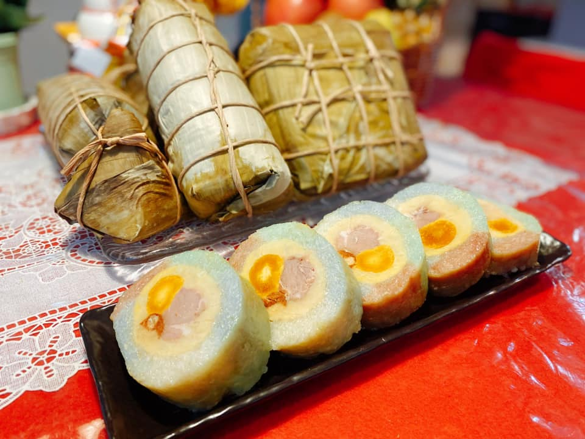
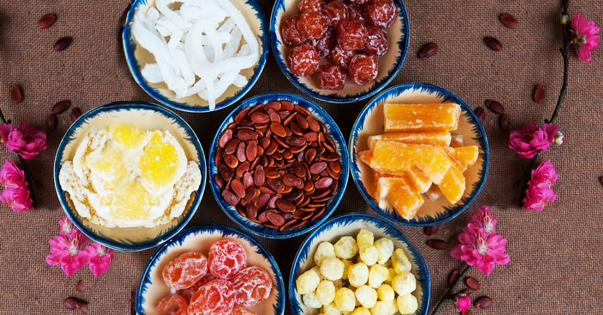

Món ăn truyền thống

Bánh chưng, bánh tét
Tượng trưng cho đất (bánh chưng) và trời (bánh tét), không thể thiếu ngày Tết.

Thịt kho trứng
Món ăn đặc trưng miền Nam, thịt mềm béo ngậy cùng trứng vịt.
Dưa hành, củ kiệu
Ăn kèm với bánh chưng, thịt mỡ để cân bằng vị giác.

Mứt Tết
Mứt dừa, mứt gừng, mứt sen... ngọt ngào đãi khách.